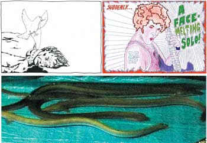

basekamp space > Events
DAMP + ACW: Together Again
Opening Reception and Live Performance:
Saturday Night Dec 4th, 6:00 - 10:00 pm
free beer & music+ special pre-opening event “Air
Guitar Competition”
Thursday Night Dec 2nd, 6:00 - 10:00 pm (info below)
BASEKAMP
723 Chestnut Street 2nd floor
Philadelphia, PA united states
215-206-8176
directions
Hours of operation
Weds - Fridays, 6 - 10pm
Exhibition dates: Dec 4th 2004 – Jan 15 2005
Together Again is an exhibition by two related collaborative groups. The DAMP collective from Melbourne, and Torino-based collaborative art group A Constructed World have worked together and independently to create artworks that explore the relationship between art and audience through video, photography, painting, publishing and live events.

images: detail of Suddenly...A Face Melting Solo, interpolated cartoons
and video by DAMP with various artists, 2004; and Explaining Contemporary
Art To Live Eels, by A Constructed World, 2004.
••••••••••••••••••••••••••••••••••••••••••••••••••••••••••••••••••••••
DAMP
The collaborative art group, DAMP, have worked together in various guises
since 1995. Over these ten years the group has comprised of over 69 artists.
Through performances, actions, video and object making they have created artworks
that explore the complicated relationships between art and audiences. The
work of DAMP could be described as funny social research experiments gone
terribly wrong that once completed, are usually documented for future audiences
to contemplate and interpret.
More DAMP info: more
DAMP info
A Constructed World
Geoff Lowe and Jacqueline Riva began working collaboratively as A Constructed
World in 1993 when they founded Artfan magazine. Since then they have worked
with video, photography, painting, publishing and events. Their projects seek
to blur thresholds between sending and receiving and they have facilitated
many collaborative workshops including people from varying backgrounds and
practices, in New York, London, Melbourne, and Torino, working with groups
such as Wild Kingdom, Art Crew, Rosebud, KinK, Life with Us, Crack of Noon
and have worked in collaboration with artist group DAMP.
More ACW info: more
ACW info
••••••••••••••••••••••••••••••••••••••••••••••••••••••••••••••••••••••
Explaining Contemporary Art to Live
Eels
A Constructed World
In 1965
Joseph Beuys made the work How To Explain Pictures to a Dead Hare, in which he walked around a gallery with his face smeared with honey and covered
in gold leaf, carrying a dead hare to whom he talked, explaining the pictures
before them. The audience for this performance was kept outside, only able
to see the goings on from behind a clear screen. There are various versions
of exactly what he did but it was concerned with explaining what was unknowable. In 2004, in an expanded field, A Constructed
World will offer a performance and video work called explaining contemporary
art to live eels. The live eels swim around a group show before being returned
to the pond, the river, the ocean and ultimately the bottom of the Sargasso
sea. This work is also about explaining what we don’t-know, yet we see
what is outside our possession and not-known as a resource to be shared. The
exhibition made by artists from More Fools in Town will be placed in an aquatic
environment and the live audience of eels and humans will be free to move
around and look at the exhibition and each other looking. There is so little that is documented and
understood about eels, they cross roads at night (sleep in haystacks) to get
back to the river then the ocean then their breeding ground where they basically
procreate to death at the bottom of the deepest part of the ocean. The tiny
new spawn then travel thousands of kilometers to the habitats where we experience
them. No eel has ever been born in captivity. They can live for months in
low vibe in a freezer, they can be extremely hardy but are now declining in
numbers. explaining contemporary art to
live eels will be presented on three continents by A Constructed
World in 2004-2005 and this will be presented at Basekamp in Philadelphia
in a group show with Melbourne group/collective DAMP. This work will also
be accompanied by the ACW video work, Big Dirty Love, and made in collaboration
with sound artist Steve Piccolo.
••••••••••••••••••••••••••••••••••••••••••••••••••••••••••••••••••••••
Suddenly... a face
melting solo
DAMP
Over
the preceding year the collaborative group DAMP from Melbourne invited friends,
colleagues and other groups from around the world to shoot short 30 second
videos. Each scene was to contain an object entering the frame and a different
object exiting. Damp then filmed, connecting scenarios using these objects
as links. What results is a chain reaction of sorts, which inextricably takes
the members of the group, through a mega-narrative loop via various communities,
times, continents and random humorous events. The aim was to track the small
turns of fate that connects and separates each of us to one another. This video loop will be accompanied by a
series of over 120 drawings which illustrate this game of six degrees of separation
to an extreme conclusion and by an installation and other objects which further
utilize these seemingly 'dead' endings as means for new beginnings.
Air Guitar Competition
Thursday Night Dec 2nd, 6:00 - 10:00 pm
In
great rock tradition DAMP is keen to hold an air guitar competition as a way
of meeting people and having a good time. Participants are invited free of
charge to cut out and paint their own guitars and perform their favorite songs
in front of large 'Damplifier' paintings. The Air Guitar workshop is open
to all and will take place at BASEKAMP during the week leading up to the exhibition
opening. To register or for more information, please email or call BASEKAMP
(contact info below).
••••••••••••••••••••••••••••••••••••••••••••••••••••••••••••••••••••••
For a schedule of events or additional press information
please call or send inquiries to:
Scott Rigby (215) 206-8176 scott@basekamp.com
Jen Goettner (215) 694-4749 jen@basekamp.com
Arts
Victoria
Generous support for this exhibition provided by Arts Victoria.
BASEKAMP
BASEKAMP is a non commercial studio and exhibition space whose primary focus
is to participate in the creation, facilitation and promotion of large scale
collaborative projects by contemporary artists.
BASEKAMP invites domestic and international collaborative groups in a joint
experiment to develop new models of relations within overlapping art communities.